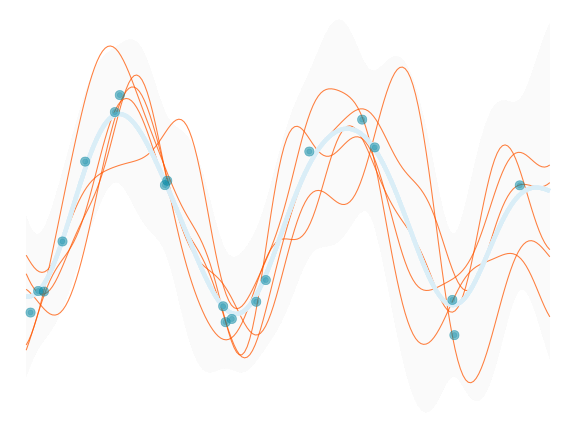
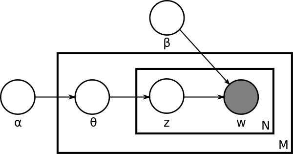

13 Until Next Time…

All models are stardust.
As we wrap things up, let’s revisit some of the key points we’ve covered in this text, and talk more about the modeling process in general.
13.1 How to Think About Models
When we first started our discussion of models in data science, we talked about how a model is a simplified representation of reality. They start as ideas based on our intuition or experience, and they can sometimes be very simple ones. But at some point we start to think of them more formally, as a step towards testing those ideas in the real world. For statistics, machine learning, and data science more generally, models are then put into mathematical equations that give us a common language to reference them by. This does not have to be complex though. As an example, most of the models you’ve seen so far can be expressed as follows:

In words, this equation says that the target variable \(y\) is a function of the feature inputs \(X\), along with anything else that we don’t include in that set. This is the basic form of a model, and it’s the same for linear regression, logistic regression, and even random forests and neural networks1.
To aid our understanding beyond the math, we try to visually express models in the form of graphical models, or even in more complex ways with neural networks2, as in the following images.


But even now these models are still at the idea stage, and we ultimately need to see how they work in the world, make predictions, and help us to make important decisions. We’ve seen how to do this with linear models of various forms, and more unusual model implementations in the form of tree-based models, and even highly complex neural networks. These are the tools that allow us to take our ideas and turn them into something that can be used to make decisions, and that’s the real power of using models in data science.
At this point, we can break our thinking about models into the following components:
Model
In data science, a model refers to a unique (mathematical) implementation we’re using to answer our questions. It specifies the architecture of the model, which might be a simple linear component, a series of trees, or neural network. In addition, the model specifies the functional form, the \(f()\) in our equation, that translates inputs to outputs, and the parameters required to make that transformation. In code, the model is implemented with functions such as lm in R, or in Python, an XGBoostClassifier or PyTorch nn.Model class.
Task
The task can be thought of as the goal of our model, which might be defined as regression, classification, ranking, or next word prediction. It is closely tied to the objective or loss function, which is like a measure of correspondence between the model output and the target we’re trying to understand. The objective function provides the model a goal - minimize target-output discrepancy or maximize similarity. As an example, if our target is numeric and our task is ‘regression’, we can use mean squared error as an objective function, which provides a measure of the prediction-target discrepancy.
Algorithm
Various algorithms allow us to estimate the parameters of the model, typically in an iterative fashion, moving from one guess to a hopefully better one. This could be maximum likelihood, bayesian estimation, or stochastic gradient descent, or a specific implementation of these, such as penalized likelihood, hamilton monte carlo, or backpropagation.
So when we think about models, we start with an idea, but in the end it needs to be expressed in a form that suggests an architecture that can take in data and make outputs in the form of predictions or what can be amenable to such. With that in place, we need an algorithm that can obtain parameter estimates of the model, and a way to evaluate how well the model is doing. While this is enough, it only gets us the bare minimum of a result. There are many more things we have to do to help us interpret results, understand its performance, and get a sense of its limitations.
13.2 Key Steps in Modeling
When it comes to modeling, there are a few key steps that you should always keep in mind. These are not necessarily exhaustive, but we feel they’re a good way to think about how to approach modeling in data science.
Define the problem
Start by clearly defining the problem you want to solve. It is often easy to express in very general terms, but it’s often challenging to pin down the problem statement more precisely, in a way that can actually help you solve it. What are you trying to predict? What data do you have to work with? What are the constraints on your data and model? What are the consequences of the results, whatever they may be? Why do you even care about any of this? These are all questions you should try to answer before diving into modeling.
Know your data well
During our time consulting in industry and academia, we’ve seen many cases where the available data is simply not suited to answer the question at hand3. This leads to wasted time, money, and other resources. If the data doesn’t have the appropriate content you can’t possibly answer your question with it.
In addition, if your data is fraught with issues due to inadequate exploration, cleaning , or transformation, then you’re going to have a hard time getting valuable results. It is very common to be dealing with data that has issues that even those who collected it are unaware of, so always be looking out for ways to improve your data.
Have multiple models at your disposal
Go into a modeling project with a couple models in mind that you think might be useful. This could even be as simple as increasing complexity within a single model approach - you don’t have to get too fancy! You should have a few models that you’re comfortable with and that you know how to use, and for which you know the strengths and weaknesses. Whenever possible, make time to explore more complex or less familiar approaches that you also think may be suitable to the problem. As we’ve discussed (Section 3.2.3), model comparison can help you have more confidence in the results of the model that’s finally chosen. Just like in a lot of other situations, you don’t want to ‘put all your eggs in one basket’, and you’ll always have more to talk about and consider if you have multiple models to work with.
Communicate your results
If you don’t know the model and underlying data well enough to explain the results to others, you’re not going to be able to use them effectively in the first place. Conversely, you also may know the technical side very well, but if you’re unable to communicate the results in simpler terms that others can understand, you’re going to have a hard time convincing others of the value of your work.
13.3 More Models
When choosing a model, there’s a lot at your disposal. The world of data science is vast, and we’ve only scratched the surface of what’s out there. Here are a few more models that you may encounter in your data science journey:
Statistical Models
In the statistical realm there are many more models that focus on different target distributions and types. For instance, we might use a beta distribution/likelihood for targets between 0 and 1, ordinal logistic regression for ordinal targets, or survival models for time-to-event outcomes. Some models are field-specific, like two-stage least squares in econometrics. Most of these models are essentially linear models with slight modifications.
Nonlinear models are another realm, which are a bit different from the nonlinear aspects of GLMs, GAMs, or deep learning. These models assume a specific (non-linear) functional form, and can be used to explore relationships that are not well captured by standard linear models. Examples range from something as simple as a polynomial regression or logistic growth model, to more complex biological and epidemiological models. These approaches are not as flexible as Generalized Additive Models (GAMs) or as predictive as neural networks, but they can potentially be useful in the right context.
As a final consideration, there are ‘multivariate’ techniques like Principal Component Analysis (PCA), factor analysis, and similar which are still pretty widely used. There are also cases where the primary target is multivariate in nature, meaning a standard regression with multiple outcomes. These are more common within some areas like economics and psychology.
Machine Learning
In a purely machine learning context, you may find other models beyond those just mentioned in the statistical realm. These models prioritize prediction and would not produce standard statistical output like coefficients and uncertainty estimates by default. Examples include support vector machines, k-nearest neighbors, and other techniques. Most of these traditional ‘machine learning models’ have fallen out of favor due to their inflexibility with heterogeneous data or poor performance compared to more modern approaches. However, even then, their spirit may live on in modern applications.
You’ll also find models that focus on ranking, either with an outcome of ranks requiring a specific loss function (e.g. LambdaRank), or where ranking is used to simplify decision-making through post-estimation ranking of predictions (e.g., decile ranking, uplift modeling). In addition, you can find machine learning techniques extended to survival, ordinal, and other situations that are more common in the statistical realm.
Other areas of machine learning, like reinforcement learning, recommender systems, and unsupervised learning provide additional models that can be used in various scenarios. Plenty is left for you to explore here as well!
Deep Learning
When it comes to deep learning, it seems there is a new model every day, and it’s hard to keep up. In general,convolutional neural networks are the go-to for computer vision tasks, while transformers are commonly used for natural language processing, but both have been applied to the other domain with success. For tabular data you’ll typically see some variant of Multilayer Perceptrons (MLPs), often with embeddings for categorical features. Some have attempted transformers and CNNs here as well, but results are mixed.
The deep learning landscape also includes models like deep graphical networks, and deep Q learning for reinforcement learning, specific models for image segmentation (e.g. SAM), recurrent neural networks and LSTM for time-series data, and generative adversarial networks for a variety of tasks. Some specific techniques are falling out of favor as transformer-based architectures are being applied to seemingly everything, but the field is dynamic, and it remains to be seen which methods will prevail in the long run.
13.4 Families of Models
Though there are many models out there, even if we restrict the discussion to tabular data, we can group them in a fairly simple way that would cover most of the standard problems you’ll come across.
GLM and Related: Interpretable Insights
Here we have standard linear models with a focus on interpretability. Basically anything you’d find in a traditional stats or econometrics textbook would belong to this ‘family’.
- Includes: GLM, survival, ordinal, time-series, other distributions (beta, tweedie)
- Best for: small data situations (samples and features), a baseline model, a causal model, post-model analysis of the results from more complex models
- Primary strength: ease of estimation, interpretability, uncertainty estimation
- Primary weakness: relatively poor prediction, may not capture natural data complexity
Penalized Regression and Friends: Predictive Progress
This family encompasses techniques that could be used as stepping stones towards machine learning. These include linear models enhanced with regularization, and advanced statistical models that deliberately incorporate nonlinearities and other complexities. Moreover, our emphasis begins to shift more towards prediction in this context, though these models still provide relatively easier interpretation compared to the next group.
- Includes: lasso/ridge, mixed models, GAMs, Bayesian*
- Best for: small to large data, possibly a relatively large number of features (esp. lasso), baseline model
- Primary strength: increased predictive capability while maintaining interpretability
- Primary weakness: interpretability can decrease, estimation difficulty can start to arise (convergence issues, uncertainty)
Trees & Nets: Technological Titans
This family includes tree-based models and neural networks, which are almost exclusively focused on predictive performance by default, and represent a significant increase in complexity and computational requirements.
- Includes random forests, gradient boosting, neural networks (‘basis function models’)
- Best for: prediction/performance
- Primary strength: prediction, ability to handle potentially very large data and numbers of features
- Primary weakness: interpretability and uncertainty estimation
Thinking about families or groups of models can do a lot to help demystify the modeling process. You could come up with other schemas within a specific data domain or group of models, there’s no solid rule here. But it can be helpful to compartmentalize the models so that you don’t get overwhelmed by what are often minor details that won’t significantly impact the practical application.
The differences between the model families are not substantial, particularly between the first two. Specific models may only differ in the likelihood function, the penalty term, or just a shift in focus. The third group is a bit different, but it mostly just extends the application of nonlinear and interaction effects we can implement from the first groups, allowing for more computational capacity and flexibility. But if you’re new to modeling or dabbling in a new area, we think this grouping can quickly help you understand what you’re looking at and what you might want to use for a given problem. As you do more modeling, you’ll likely come up with your own.
13.4.1 A simple modeling toolbox
In practice, just a handful of techniques of the ones you’ve seen in this text can provide a lot of modeling power. Here’s a simple toolbox that can cover a lot of the ground you’d need in a typical data science project:
- Penalized Regression: Lasso, ridge and similar keep it linear while increasing predictive power and accommodating more features.
- Generalized Additive Models (GAM): These models simplify to GLM and mixed models if needed, handle nonlinear relationships and interactions, and use a penalized approach. They can also be extended to time-series and spatial data contexts with ease, making GAMs a very versatile option.
- Boosting/Tree-based Models: At the time of this writing, boosting methods consistently deliver the best predictive performance for tabular data, and are quite computationally efficient. That’s reason enough to know how to use them.
- A Basic Deep Learning Model (MLP): A Multilayer Perceptron (MLP), especially one that incorporates embeddings for categorical/text features, is a very powerful tool. It can be combined with other deep learning models applied to other types of data. We’re still working towards an implementation that can handle any tabular data we throw at it, but we’re not quite there yet.
Besides the models, it’s crucial to understand how to evaluate your models (cross-validation, metrics), how to interpret them (coefficients, SHAP, feature importance, uncertainty), and how to manage the data you’re working with. We’ve covered a lot of this in the text, but there’s always more to learn, and more to practice.
13.5 How to Choose?
People love to say that ‘all models are wrong, but some are useful’5. We prefer to think of this a bit differently. There is no (necessarily) wrong model to use to answer your question, and there’s no guarantee that you would come to a different conclusion from using a simple correlation than you would from a complex neural network. But some models can be more useful depending on the context, and some are more useful depending on the question you’re asking.
In the end, nothing says you can’t use multiple models to answer your question, and in fact, this is often a good idea assuming you have the time and resources to do so. As we’ve talked about, you can use a simple model to get a baseline, and then use a more complex model to see if you can improve on that. You can use a model that’s easy to interpret to get a sense of what’s going on, and then use a model that’s better at prediction. Even when your primary focus is prediction, you can often combine models to potentially get a better result.
And that’s the main thing, you don’t have to restrict yourself when it comes to modeling in data science, and you shouldn’t. The key is to understand what you’re trying to do, and to use the right tools for the job.
13.6 The Hard Part
Modeling is just one aspect of the data science process, and the hard part of that process is often not so much the model itself, but everything else that goes into it and what you do with it after. It can be difficult to come up with the original idea for a model, and even harder to get it to work in practice.
The Data
Model performance is largely going to come from the quality of the data and how you’ve prepared it, from ensuring its integrity to feature engineering. Some models will definitely work better than others in certain situations, but there are no guarantees, and often the practical difference in performance is minimal. But you can potentially improve performance by understanding your data better, and by understanding the limitations of your model. Having more domain knowledge can help reduce noise and irrelevant information that you might have otherwise retained, and can provide insights for feature engineering. Thorough data exploration can reveal bugs and issues to be fixed, and will help you understand the relationships between your features and your target.
The Interpretation
Once you have a model, you need to understand what it’s telling you. This can be as simple as looking at the coefficients of a linear regression, or as complex as trying to understand the weights of a hidden layer in a neural network. Once you get past a linear regression though, expect model interpretation to get hard. But whatever model you use, you need to be able to explain what the model is doing, and how you’re ultimately coming to your conclusions. This can be difficult, and often requires a lot of work. Even if you’ve used a model often, it may still be difficult to understand in a new data environment. Model interpretation can take a lot of effort, but it’s important to do what’s necessary to trust your model results, and help others trust them as well.
What You Do With It
Once you have the model and you (think you) understand it, you need to be able to use it effectively. If you’ve gone to this sort of trouble, you must have had a good reason for undertaking what can be a very difficult task. We use models to make business decisions, inform policy, understand the world around us, and to make our lives better. However, using a model effectively means understanding its limitations and the practical, ethical, scientific, and other consequences of the decisions you make based on it. It’s at this point that the real value of your model is realized.
In the end models are a tool to help you solve a problem. They do not solve the problem for you, and they do not absolve you of the responsibility of understanding the problem and the consequences of your decisions.
13.7 Choose Your Own Adventure
We’ve covered a lot of ground in this text, and we hope you’ve learned something new along the way. But there’s so much more to learn, and so much more to do. We hope that you’ll be able to take what you’ve learned here and apply it to your own work, and that you’ll continue to learn and grow as a data scientist.
So where do you go from here? The world of data science is vast and infinite. Choose your own adventure!
Michael & Seth
Neural networks are a bit different in that they can be thought of as a series of (typically nested) functions that are applied to the data, but they can still be expressed in this form. The functions are just more complex, and the parameters are estimated in a different way.↩︎
The LDA model depicted from Wikipedia was one of the early machine learning models for understanding natural language, and in particular to extract topics from text. It was a lot of fun to play with these, but it took a lot of pre-processing of text to get them to work at all, and they were performed pretty poorly in practice. That model may look like something peculiar, but it’s not much more than a flexible PCA on a matrix of word counts, or from another perspective, a Bayesian multinomial model.↩︎
This is a common problem where data is often collected for one purpose and then used for another, as with general purpose surveys or administrative data. Sometimes it can be that the available data is simply not enough to say anything without a lot of uncertainty, as in the case of demographic data regarding minority groups for which there may be little to no instances in a particular sample. Zero/Few-shot learning isn’t applicable here, because there isn’t a model pre-trained on millions/billions of similar examples to transfer knowledge from.↩︎
Until Python can go from model to visualizing the marginal effect with uncertainty in two or three lines of code (even if a Bayesian implementation), possibly on millions of observations in a few seconds, and even visualizing the derivatives (also with uncertainty estimates), it’s not going to be as easy to use as R for GAMs. But here’s hoping the current efforts continue there.↩︎
George Box, a famous statistician, said this in 1976.↩︎